Building a small model
Martin Modrák
2021-09-17
small_model_workflow.RmdHere we describe a complete process to iteratively build and validate the implementation of a non-trivial, but still relatively small model. This is not a full Bayesian Workflow, instead the process described here can be thought of as a subroutine in the full workflow: here we take a relatively precise description of a model as input and try to produce a Stan program that implements this model. Once we have a Stan program we trust, it is still necessary to validate its fit to actual data and other properties, which may trigger a need to change the model. At this point you may want to go back to simulations and make sure the modified model is implemented correctly.
The workflow described here focuses on small models. “Small” means that the model is relatively fast to fit and we don’t have to worry about computation too much. Once running ~100 fits of the model becomes too costly, there are additional tricks and considerations that we hope to delve into in a “Building a complex model” vignette (which currently doesn’t exist). Still many of the approaches here also apply to complex models (especially starting small and building each component separately), and with proper separation of the model into components, one can validate big chunks of Stan code while still working with small models.
We expect the reader to be familiar with basics of the package. If not, check out the “basic_usage” vignette.
Our goal
The example we’ll investigate is building a two-component Poisson mixture, where the mixing ratio is allowed to vary with some predictors while the means of the components are the same for all observations.
A somewhat contrived real world situation where this could be a useful model: there are two sub-species of an animal that are hard to observe directly, but leave droppings (poop) behind, that we can find. Further, we know the subspecies differ in the average number of droppings they leave at one place. So we can take the number of droppings as a noisy information about which subspecie was present at given location. We observe the number of droppings at multiple locations and record some environmental covariates about the locations (e.g. temperature, altitude) and want to learn something about the association between those covariates and the prevalence of either subspecie.
Big picture
This model naturally decomposes into two components:
the mixture component where the mixing ratio is the same for all variables
a beta regression where we take covariates and make a prediction of a probability, assuming we (noisily) observe the probability.
It is good practice to start small and implement and validate each of those components separately and then put them together and validate the bigger model. This makes is substantially easier to locate bugs. You’ll notice that the process ends up involving a lot of steps, but the fact is that we still ignore all the completely invalid models (typos, compile errors, dimension mismatches, …). Developing models you can trust is hard work. More experienced users can definitely make bigger steps at once, but we strongly discourage anyone from writing a big model in one go. My experience is that whenever I try to do this, the model breaks, is impossible to debug and then I end up breaking it down anyway.
Let’s setup and get our hands dirty:
library(SBC)
use_cmdstanr <- TRUE # Set to false to use rstan instead
# if(use_cmdstanr) {
# library(cmdstanr)
# } else {
# library(rstan)
# }
library(cmdstanr)
library(bayesplot)
library(posterior)
library(future)
plan(multisession)
options(SBC.min_chunk_size = 5)
# Setup caching of results
cache_dir <- "./small_model_worklow_SBC_cache"
if(!dir.exists(cache_dir)) {
dir.create(cache_dir)
}Mixture component
There is a good guide to mixtures in the Stan user’s guide. Following the user’s guide would save us from a lot of mistakes, but for the sake of example, we will pretend we didn’t really read it - and we’ll see the problems can be discovered via simulations.
So this is our first try at implementing the mixture component:
data {
int<lower=0> N;
int y[N];
}
parameters {
real mu1;
real mu2;
real<lower=0, upper=1> theta;
}
model {
target += log_mix(theta, poisson_log_lpmf(y | mu1), poisson_log_lpmf(y | mu2));
target += normal_lpdf(mu1 | 3, 1);
target += normal_lpdf(mu2 | 3, 1);
}
model_first <- cmdstan_model("small_model_workflow/mixture_first.stan")
backend_first <- SBC_backend_cmdstan_sample(model_first) And this is our code to simulate data for this model:
generator_func_first <- function(N) {
mu1 <- rnorm(1, 3, 1)
mu2 <- rnorm(1, 3, 1)
theta <- runif(1)
y <- numeric(N)
for(n in 1:N) {
if(runif(1) < theta) {
y[n] <- rpois(1, exp(mu1))
} else {
y[n] <- rpois(1, exp(mu2))
}
}
list(
parameters = list(
mu1 = mu1,
mu2 = mu2,
theta = theta
),
generated = list(
N = N,
y = y
)
)
}
generator_first <- SBC_generator_function(generator_func_first, N = 50)Let’s start with just a single dataset:
set.seed(68455554)
datasets_first <- generate_datasets(generator_first, 1)
results_first <- compute_results(datasets_first, backend_first,
cache_mode = "results",
cache_location = file.path(cache_dir, "mixture_first"))## Results loaded from cache file 'mixture_first'## - 1 (100%) fits had at least one Rhat > 1.01. Largest Rhat was 1.52.## - 1 (100%) fits had tail ESS undefined or less than half of the maximum rank, potentially skewing the rank statistics. The lowest tail ESS was NA.
## If the fits look good otherwise, increasing `thin_ranks` (via recompute_statistcs) or number of posterior samples (by refitting) might help.## - 1 (100%) fits had divergent transitions. Maximum number of divergences was 9.## Not all diagnostics are OK. You can learn more by inspecting $default_diagnostics, $backend_diagnostics and/or investigating $outputs/$messages/$warnings for detailed output from the backend.Oh, we have convergence problems, let us examine the pairs plots
results_first$stats## # A tibble: 3 x 15
## dataset_id parameter simulated_value rank z_score mean median sd mad
## <int> <chr> <dbl> <dbl> <dbl> <dbl> <dbl> <dbl> <dbl>
## 1 1 mu1 3.13 53 -1.05 3.91 4.23 0.747 0.0261
## 2 1 mu2 4.27 355 0.939 3.31 3.43 1.02 1.19
## 3 1 theta 0.0528 14 -1.87 0.579 0.621 0.282 0.335
## # ... with 6 more variables: q5 <dbl>, q95 <dbl>, rhat <dbl>, ess_bulk <dbl>,
## # ess_tail <dbl>, max_rank <int>
mcmc_pairs(results_first$fits[[1]]$draws())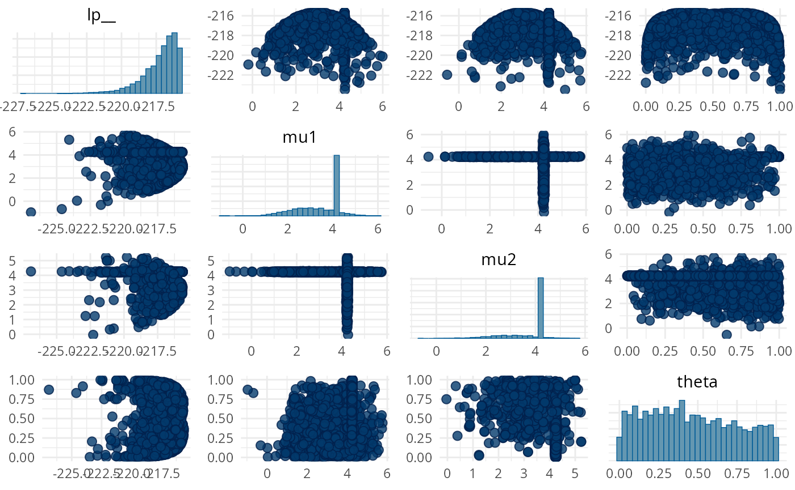
One thing that stands out is that either mu1 is tightly determined and mu2 is allowed the full prior range or the other way around. We also don’t learn anything about theta.
This might be puzzling but relates to bad usage of log_mix. The thing is that poisson_log_lpmf(y | mu1) returns a single number - the total log likelihood of all elements of y given mu1. And thus we are building a mixture where either all observations are from the first component or all are from the second component. To implement mixture where each observation is allowed to come from a different component, we need to loop over observations and do a separate log_mix call for each.
More details on the mathematical background are explained in the “Vectorizing mixtures” section of Stan User’s guide.
Fixing mixture
So we’ve fixed the log_mix problem and this is our new model:
data {
int<lower=0> N;
int y[N];
}
parameters {
real mu1;
real mu2;
real<lower=0, upper=1> theta;
}
model {
for(n in 1:N) {
target += log_mix(theta,
poisson_log_lpmf(y[n] | mu1),
poisson_log_lpmf(y[n] | mu2));
}
target += normal_lpdf(mu1 | 3, 1);
target += normal_lpdf(mu2 | 3, 1);
}
model_fixed_log_mix <- cmdstan_model("small_model_workflow/mixture_fixed_log_mix.stan")
backend_fixed_log_mix <- SBC_backend_cmdstan_sample(model_fixed_log_mix)So let’s try once again with just the same single dataset:
results_fixed_log_mix <- compute_results(datasets_first, backend_fixed_log_mix,
cache_mode = "results",
cache_location = file.path(cache_dir, "mixture_fixed_log_mix"))## Results loaded from cache file 'mixture_fixed_log_mix'We look at the statistics:
results_fixed_log_mix$stats## # A tibble: 3 x 15
## dataset_id parameter simulated_value rank z_score mean median sd mad
## <int> <chr> <dbl> <dbl> <dbl> <dbl> <dbl> <dbl> <dbl>
## 1 1 mu1 3.13 392 2.09 2.56 2.58 0.269 0.261
## 2 1 mu2 4.27 307 0.823 4.26 4.26 0.0171 0.0172
## 3 1 theta 0.0528 308 0.581 0.0380 0.0331 0.0255 0.0228
## # ... with 6 more variables: q5 <dbl>, q95 <dbl>, rhat <dbl>, ess_bulk <dbl>,
## # ess_tail <dbl>, max_rank <int>We see nothing obviously wrong, no parameter is clearly ridiculously misfit no diagnostic problems, so let’s run a few more iterations.
set.seed(8314566)
datasets_first_10 <- generate_datasets(generator_first, 10)
results_fixed_log_mix_2 <- compute_results(datasets_first_10, backend_fixed_log_mix,
cache_mode = "results",
cache_location = file.path(cache_dir, "mixture_fixed_log_mix_2"))## Results loaded from cache file 'mixture_fixed_log_mix_2'## - 10 (100%) fits had at least one Rhat > 1.01. Largest Rhat was 1.736.## - 9 (90%) fits had tail ESS undefined or less than half of the maximum rank, potentially skewing the rank statistics. The lowest tail ESS was NA.
## If the fits look good otherwise, increasing `thin_ranks` (via recompute_statistcs) or number of posterior samples (by refitting) might help.## Not all diagnostics are OK. You can learn more by inspecting $default_diagnostics, $backend_diagnostics and/or investigating $outputs/$messages/$warnings for detailed output from the backend.So there are some problems - we have quite a bunch of high R-hat and low ESS values. This is the distribution of all rhats:
hist(results_fixed_log_mix_2$stats$rhat)Let’s examine a single pairs plot:
mcmc_pairs(results_fixed_log_mix_2$fits[[1]]$draws())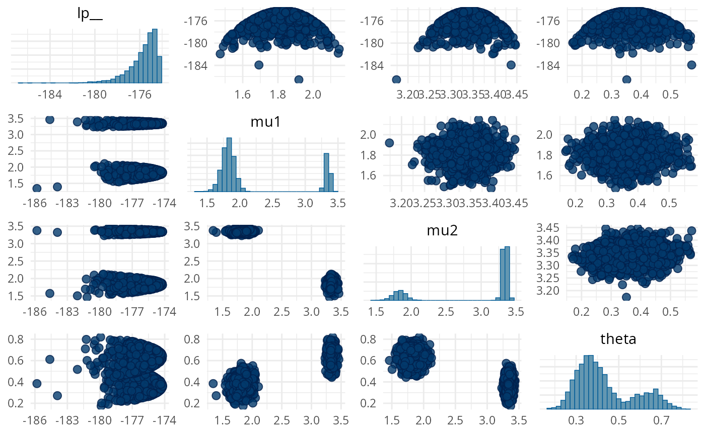
We clearly see two modes in the posterior. And upon reflection, it is not a lot surprising why: swapping mu1 with mu2 while also changing theta for 1 - theta gives exactly the same likelihood - because the ordering does not matter. A more detailed explanation of this type of problem is at https://betanalpha.github.io/assets/case_studies/identifying_mixture_models.html
Fixing ordering
We can easily fix the ordering of the mus by using the ordered built-in type.
data {
int<lower=0> N;
int y[N];
}
parameters {
ordered[2] mu;
real<lower=0, upper=1> theta;
}
model {
for(n in 1:N) {
target += log_mix(theta,
poisson_log_lpmf(y[n] | mu[1]),
poisson_log_lpmf(y[n] | mu[2]));
}
target += normal_lpdf(mu | 3, 1);
}
model_fixed_ordered <- cmdstan_model("small_model_workflow/mixture_fixed_ordered.stan")
backend_fixed_ordered <- SBC_backend_cmdstan_sample(model_fixed_ordered) We also need to update the generator to match the new names and ordering constant:
generator_func_ordered <- function(N) {
# If the priors for all components of an ordered vector are the same
# then just sorting the result of a generator is enough to create
# a valid sample from the ordered vector
mu <- sort(rnorm(2, 3, 1))
theta <- runif(1)
y <- numeric(N)
for(n in 1:N) {
if(runif(1) < theta) {
y[n] <- rpois(1, exp(mu[1]))
} else {
y[n] <- rpois(1, exp(mu[2]))
}
}
list(
parameters = list(
mu = mu,
theta = theta
),
generated = list(
N = N,
y = y
)
)
}
generator_ordered <- SBC_generator_function(generator_func_ordered, N = 50)We are kind of confident (and the model fits quickly), so we’ll already start with 10 datasets.
set.seed(3785432)
datasets_ordered_10 <- generate_datasets(generator_ordered, 10)
results_fixed_ordered <- compute_results(datasets_ordered_10, backend_fixed_ordered,
cache_mode = "results",
cache_location = file.path(cache_dir, "mixture_fixed_ordered"))## Results loaded from cache file 'mixture_fixed_ordered'## - 2 (20%) fits had at least one Rhat > 1.01. Largest Rhat was 1.207.## - 2 (20%) fits had tail ESS undefined or less than half of the maximum rank, potentially skewing the rank statistics. The lowest tail ESS was NA.
## If the fits look good otherwise, increasing `thin_ranks` (via recompute_statistcs) or number of posterior samples (by refitting) might help.## - 2 (20%) fits had divergent transitions. Maximum number of divergences was 145.## Not all diagnostics are OK. You can learn more by inspecting $default_diagnostics, $backend_diagnostics and/or investigating $outputs/$messages/$warnings for detailed output from the backend.Now some fits still produce problematic Rhats or divergent transitions, let’s browse the $backend_diagnostics (which contain Stan-specific diagnostic values) to see which datasets are causing problems:
results_fixed_ordered$backend_diagnostics## dataset_id max_chain_time n_failed_chains n_divergent n_max_treedepth
## 1 1 0.567 0 2 0
## 2 2 0.780 0 145 0
## 3 3 0.532 0 0 0
## 4 4 0.474 0 0 0
## 5 5 2.567 0 0 0
## 6 6 0.684 0 0 0
## 7 7 0.531 0 0 0
## 8 8 0.470 0 0 0
## 9 9 0.380 0 0 0
## 10 10 0.359 0 0 0
## n_rejects
## 1 0
## 2 0
## 3 0
## 4 0
## 5 0
## 6 0
## 7 0
## 8 0
## 9 0
## 10 0There are fits with high R-hats and low ESS. Let’s look at the pairs plot for one of those:
problematic_fit_id <- 2
problematic_fit <- results_fixed_ordered$fits[[problematic_fit_id]]
mcmc_pairs(problematic_fit$draws(), np = nuts_params(problematic_fit))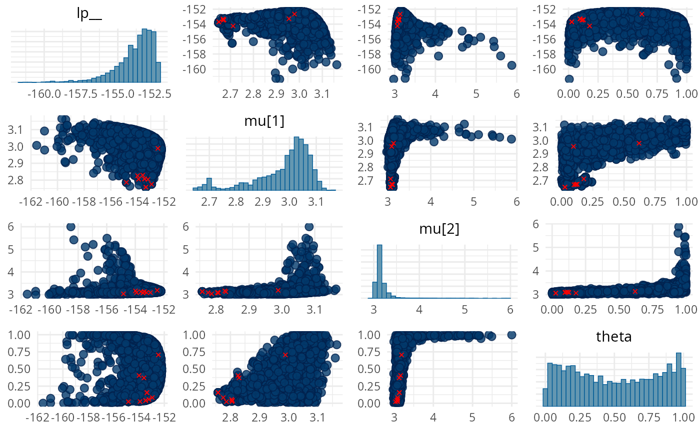
There is a lot of ugly stuff going on. Notably, one can notice that the posterior of theta is bimodal, preferring either almost 0 or almost 1 - and when that happens, the mean of one of the components is almost unconstrained. Why does that happen? The key to the answer is in the simulated values for the component means:
subset_draws(datasets_ordered_10$parameters, draw = problematic_fit_id)## # A draws_matrix: 1 iterations, 1 chains, and 3 variables
## variable
## draw mu[1] mu[2] theta
## 2 3.1 3.1 0.65We were unlucky enough to simulate a dataset where both components have almost the same mean and thus we are actually looking at a dataset that is not really a mixture. Mixture models can misbehave badly in such cases (see once again the case study by Mike Betancourt for a bit more detailed dive into this particular problem).
Fixing degenerate components?
What to do about this? Fixing the model to handle such cases gracefully is hard. But the problem is basically our prior - we want to express that (since we are fitting a two component model), we don’t expect the means to be too similar. So if we can change our simulation to avoid this, we’ll be able to proceed with SBC. If such a pattern appeared in real data, we would still have a problem, but we would notice thanks to the diagnostics.
This can definitely be done. But another way is to just ignore the datasets that had divergences for SBC calculations. It turns out that if we remove datasets in a way that only depends on the observed data (and not on unobserved parameters), the SBC identity is preserved and we can use SBC without modifications. The resulting check is however telling us something only for datasets that were not rejected. In this case this is not a big issue: if a fit had divergent transitions, we would not trust it anyway, so removing fits with divergent transitions is not such a big deal.
For more details see the rejection_sampling vignette.
So let us subset the results to avoid divergences:
dataset_ids_to_keep <-
results_fixed_ordered$backend_diagnostics$dataset_id[
results_fixed_ordered$backend_diagnostics$n_divergent == 0]
# Equivalent tidy version if you prefer
# dataset_ids_to_keep <- results_fixed_ordered$backend_diagnostics %>%
# dplyr::filter(n_divergent == 0) %>%
# dplyr::pull(dataset_id)
results_fixed_ordered_subset <- results_fixed_ordered[dataset_ids_to_keep]
summary(results_fixed_ordered_subset)## SBC_results with 8 total fits.
## - No fits had errors.
## - No fits gave warnings.
## - No fits had Rhat > 1.01.
## - All fits had tail ESS > half of the maximum rank.
## - The lowest bulk ESS was 1073
## - No fits had failed chains.
## - No fits had divergent transitions.
## - No fits had iterations that saturated max treedepth.
## - No fits had steps rejected.
## - Maximum time per chain was 2.567 sec.This gives us no obvious problems.
plot_rank_hist(results_fixed_ordered_subset)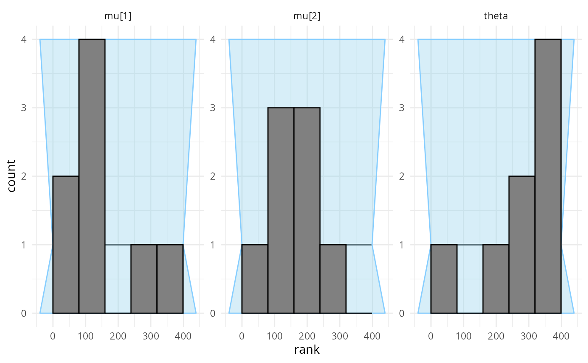
plot_ecdf_diff(results_fixed_ordered_subset)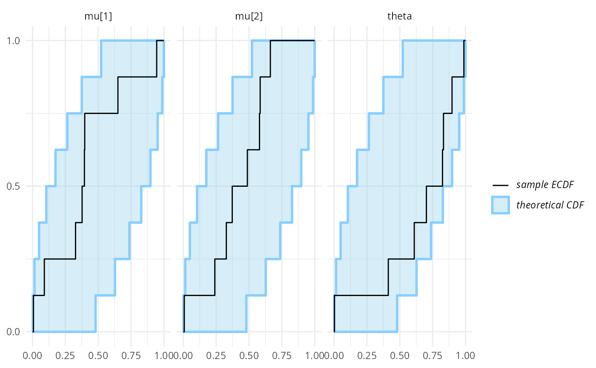
Since we now have only 8 simulations, it is not surprising that we are still left with a huge uncertainty about the actual coverage of our posterior intervals - we can see that in a plot (showing observed coverage of central posterior intervals of varying width):
plot_coverage(results_fixed_ordered_subset)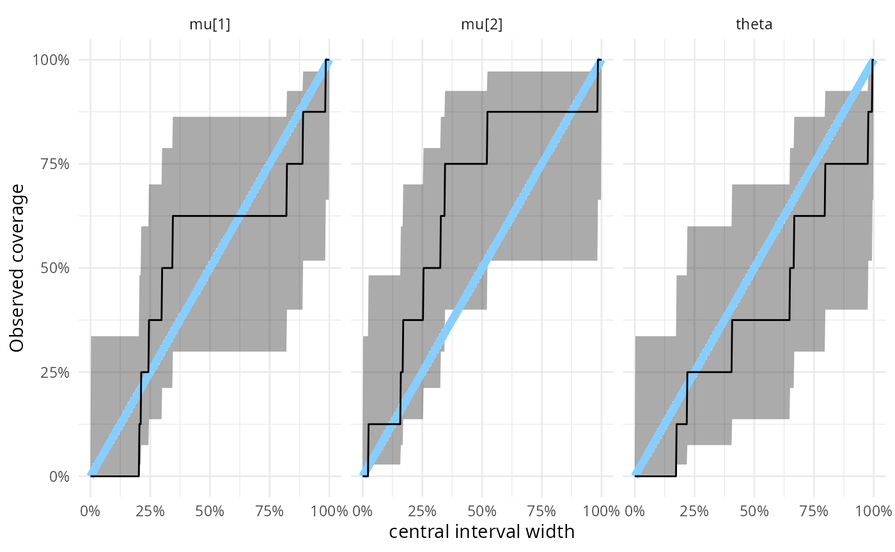 Or investigate numerically.
empirical_coverage(results_fixed_ordered_subset$stats, width = c(0.5,0.9,0.95))## # A tibble: 9 x 6
## parameter width width_represented ci_low estimate ci_high
## <chr> <dbl> <dbl> <dbl> <dbl> <dbl>
## 1 mu[1] 0.5 0.499 0.299 0.625 0.863
## 2 mu[1] 0.9 0.900 0.518 0.875 0.972
## 3 mu[1] 0.95 0.950 0.518 0.875 0.972
## 4 mu[2] 0.5 0.499 0.400 0.75 0.925
## 5 mu[2] 0.9 0.900 0.518 0.875 0.972
## 6 mu[2] 0.95 0.950 0.518 0.875 0.972
## 7 theta 0.5 0.499 0.137 0.375 0.701
## 8 theta 0.9 0.900 0.400 0.75 0.925
## 9 theta 0.95 0.950 0.400 0.75 0.925We can clearly see that while there are no terrible errors, a quite big miscalibration is still consistent with the SBC results so far.
So we can run for more iterations - to reduce memory consumption, we set keep_fits = FALSE. You generally don’t want to do this unless you are really short on memory, as it makes you unable to inspect any problems in your fits:
set.seed(54987622)
datasets_ordered_100 <- generate_datasets(generator_ordered, 100)
results_fixed_ordered_100 <- compute_results(datasets_ordered_100, backend_fixed_ordered,
keep_fits = FALSE, cache_mode = "results",
cache_location = file.path(cache_dir, "mixture_fixed_ordered_100"))## Results loaded from cache file 'mixture_fixed_ordered_100'## - 22 (22%) fits had at least one Rhat > 1.01. Largest Rhat was 1.354.## - 25 (25%) fits had tail ESS undefined or less than half of the maximum rank, potentially skewing the rank statistics. The lowest tail ESS was NA.
## If the fits look good otherwise, increasing `thin_ranks` (via recompute_statistcs) or number of posterior samples (by refitting) might help.## - 28 (28%) fits had divergent transitions. Maximum number of divergences was 182.## Not all diagnostics are OK. You can learn more by inspecting $default_diagnostics, $backend_diagnostics and/or investigating $outputs/$messages/$warnings for detailed output from the backend.Once again we subset to keep only non-divergent fits - this also removes all the problematic Rhats and ESS.
dataset_ids_to_keep <-
results_fixed_ordered_100$backend_diagnostics$dataset_id[
results_fixed_ordered_100$backend_diagnostics$n_divergent == 0]
# Equivalent tidy version
# dataset_ids_to_keep <- results_fixed_ordered_100$backend_diagnostics %>%
# dplyr::filter(n_divergent == 0) %>%
# dplyr::pull(dataset_id)
results_fixed_ordered_100_subset <- results_fixed_ordered_100[dataset_ids_to_keep]
summary(results_fixed_ordered_100_subset)## SBC_results with 72 total fits.
## - No fits had errors.
## - No fits gave warnings.
## - No fits had Rhat > 1.01.
## - All fits had tail ESS > half of the maximum rank.
## - The lowest bulk ESS was 507
## - No fits had failed chains.
## - No fits had divergent transitions.
## - No fits had iterations that saturated max treedepth.
## - No fits had steps rejected.
## - Maximum time per chain was 4.05 sec.And we can use bind_results to combine the new results with the previous fits to not waste our computational effort.
results_fixed_ordered_combined <- bind_results(
results_fixed_ordered_subset, results_fixed_ordered_100_subset)
plot_rank_hist(results_fixed_ordered_combined)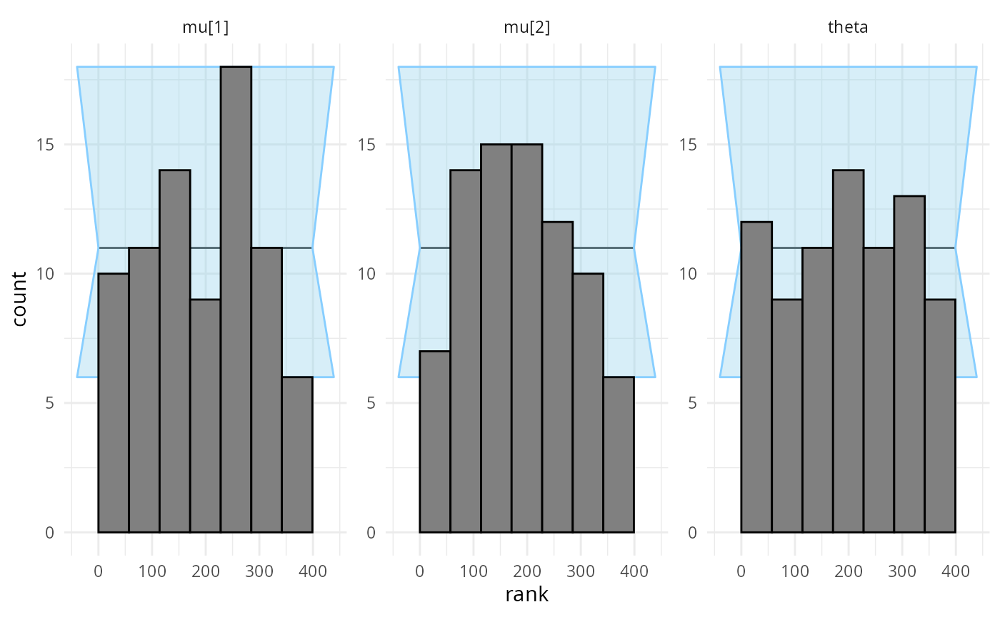
plot_ecdf_diff(results_fixed_ordered_combined)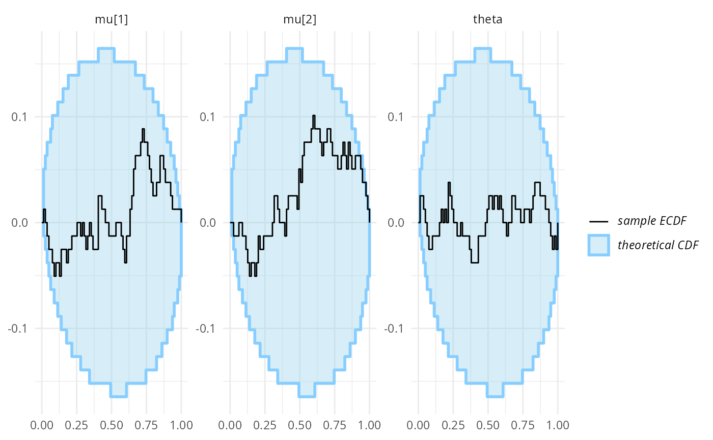
Seems fairly well within the expected bounds. We could definitely run more iterations if we wanted to have a more strict check, but for now, we are happy and the remaining uncertainty about the coverage of our posterior intervals is no longer huge, so it is highly unlikely there is some big bug lurking down there. While we see a potential problem where the coverage for mu[1] and mu[2] is no longer consistent with perfect calibration, the ecdf_diff plot takes precedence as the uncertainty in the coverage plot is only approximate and we thus cannot take it too seriously (see help("empirical_coverage") for some more details).
plot_coverage(results_fixed_ordered_combined)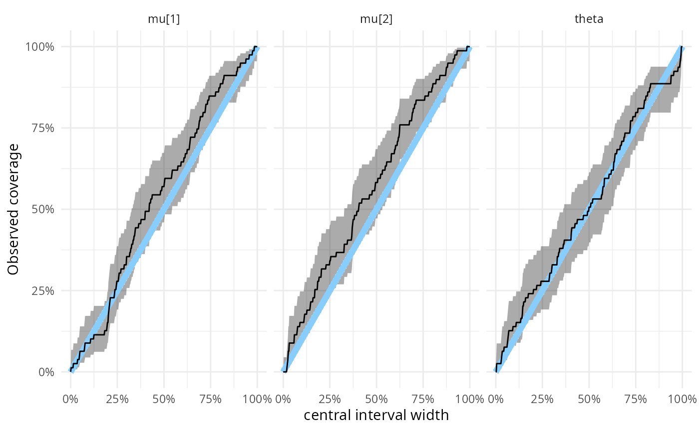
Note: it turns out that extending the model to more components becomes somewhat tricky as the model can become sensitive to initialization. Also the problems with data that can be explained by fewer components than the model assumes become more prevalent.
Beta regression component
Let’s move to the beta regression component of our model. After spending a bunch of time implementing this, I realized, that maybe treating this as a logistic regression component would have been wiser (and sufficient). But I am gonna keep it in - it just demonstrates that a real workflow can be messy and let’s us show some additional classes of problems and how they manifest in SBC.
Checking the wiki page for Beta distribution, we notice that it has two parameters, both bounded to be positive. So our first attempt at beta regression just creates two linear predictors - one for each parameter of the distribution, exponentiates to make them positive and we have a model:
data {
int<lower=0> N_obs;
vector<lower=0, upper=1>[N_obs] y;
int<lower=1> N_predictors;
matrix[N_predictors, N_obs] x;
}
parameters {
matrix[2, N_predictors] beta;
}
model {
matrix[2, N_obs] linpred = beta * x;
target += beta_lpdf(y | exp(linpred[1,]), exp(linpred[2,]));
target += normal_lpdf(to_vector(beta) | 0, 1);
}
model_beta_first <- cmdstan_model("small_model_workflow/beta_first.stan")
backend_beta_first <- SBC_backend_cmdstan_sample(model_beta_first) We also write a matching generator (microoptimization tip: I usually write Stan models first so that I can work on the generator code while the Stan model compiles):
generator_func_beta_first <- function(N_obs, N_predictors) {
repeat {
beta <- matrix(rnorm(N_predictors * 2, 0, 1), nrow = 2, ncol = N_predictors)
x <- matrix(rnorm(N_predictors * N_obs, 0, 1), nrow = N_predictors, ncol = N_obs)
x[1, ] <- 1 # Intercept
y <- array(NA_real_, N_obs)
for(n in 1:N_obs) {
linpred <- rep(0, 2)
for(c in 1:2) {
for(p in 1:N_predictors) {
linpred[c] <- linpred[c] + x[p, n] * beta[c, p]
}
}
y[n] <- rbeta(1, exp(linpred[1]), exp(linpred[2]))
}
if(all(y > 1e-7) && all(y < 1 - 1e-7)) {
break;
}
}
list(
parameters = list(
beta = beta
),
generated = list(
N_obs = N_obs,
N_predictors = N_predictors,
y = y,
x = x
)
)
}
generator_beta_first <- SBC_generator_function(generator_func_beta_first, N_obs = 50, N_predictors = 3)We’ll start with 10 datasets once again.
set.seed(3325488)
datasets_beta_first <- generate_datasets(generator_beta_first, 10)
results_beta_first_10 <- compute_results(datasets_beta_first, backend_beta_first,
cache_mode = "results",
cache_location = file.path(cache_dir, "beta_first_10"))## Results loaded from cache file 'beta_first_10'## - 1 (10%) fits had divergent transitions. Maximum number of divergences was 6.## - 10 (100%) fits had some steps rejected. Maximum number of rejections was 22.## Not all diagnostics are OK. You can learn more by inspecting $default_diagnostics, $backend_diagnostics and/or investigating $outputs/$messages/$warnings for detailed output from the backend.We get a single fit with divergent transitions and the ranks look mostly OK:
plot_rank_hist(results_beta_first_10)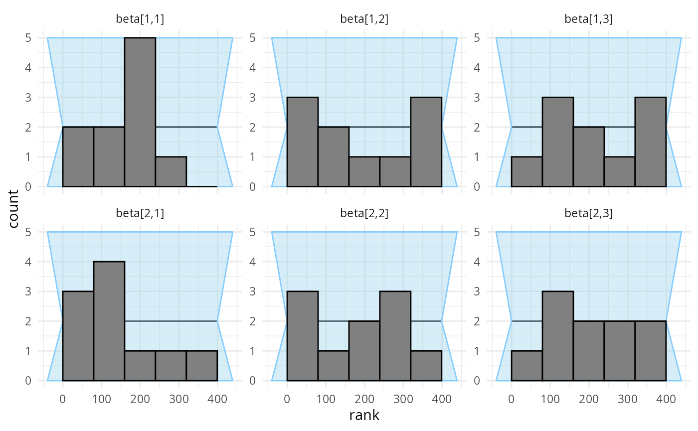
plot_ecdf_diff(results_beta_first_10)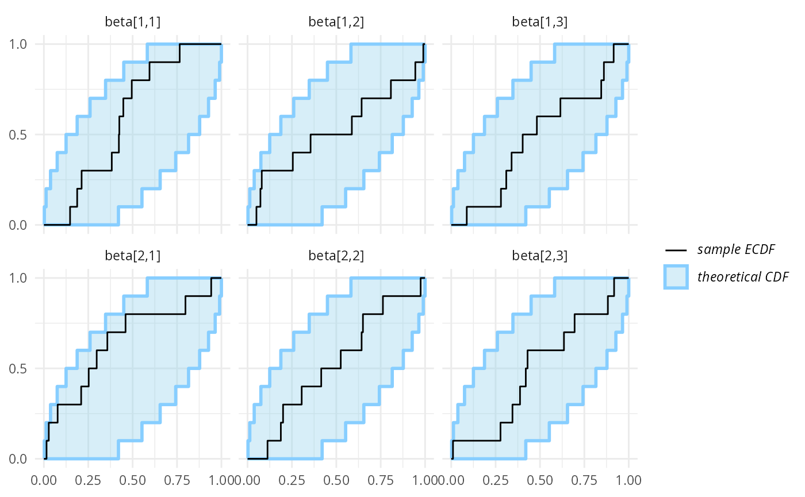
Let’s inspect the pairs plot for the offending fit:
mcmc_pairs(results_beta_first_10$fits[[3]]$draws())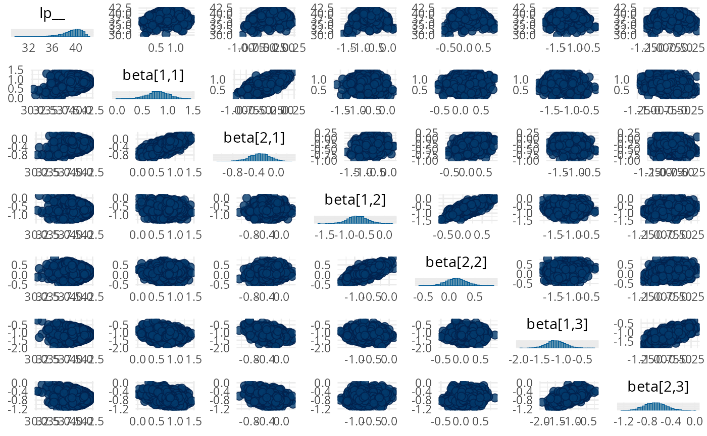
This is a very ugly plot, but we see some correlations between the corresponding beta elements (e.g. beta[1,1] and beta[2,1]), let’s have a closer look and show the same pairs plot for five of our fits:
for(i in 1:5) {
fit <- results_beta_first_10$fits[[i]]
print(mcmc_pairs(fit$draws(), pars = c("beta[1,1]", "beta[2,1]","beta[1,2]", "beta[2,2]")))
}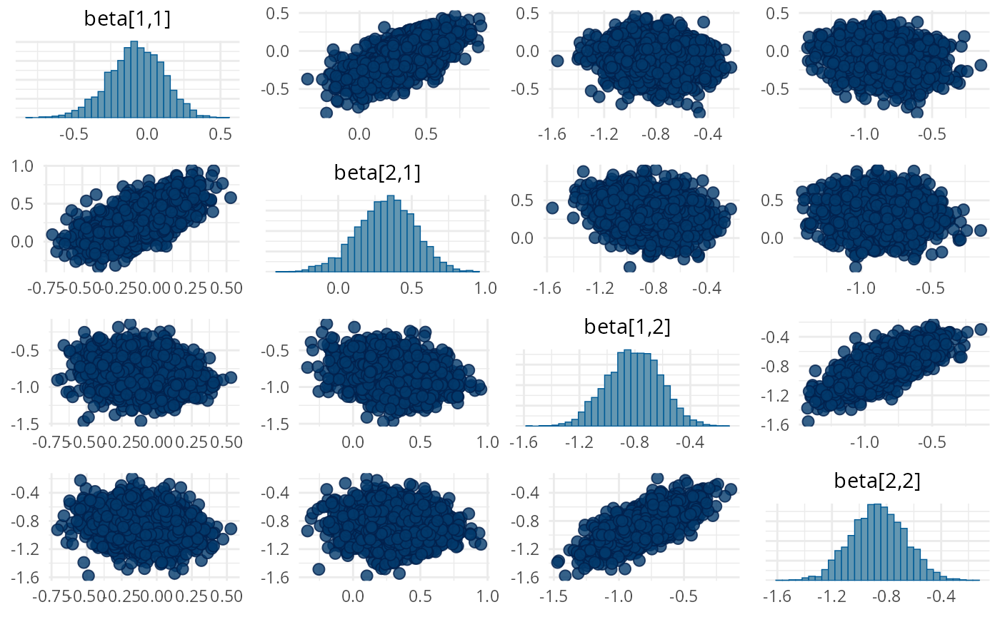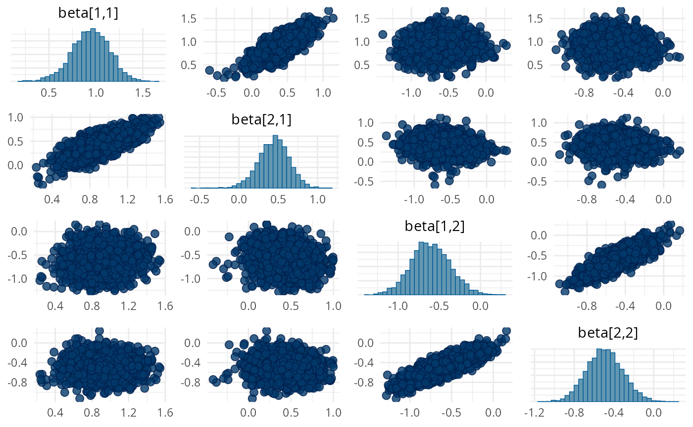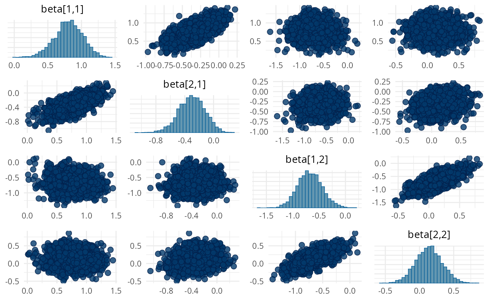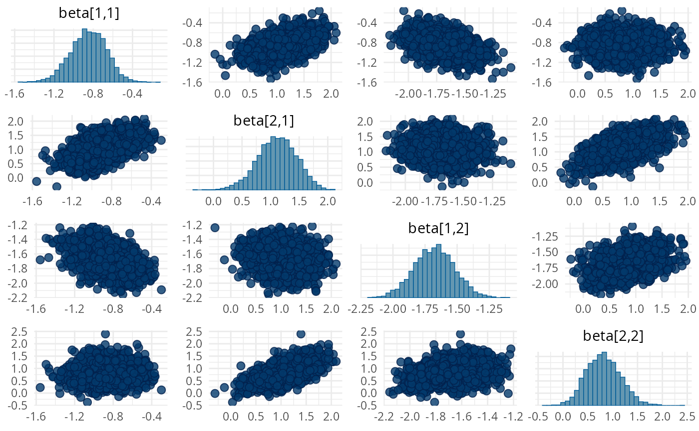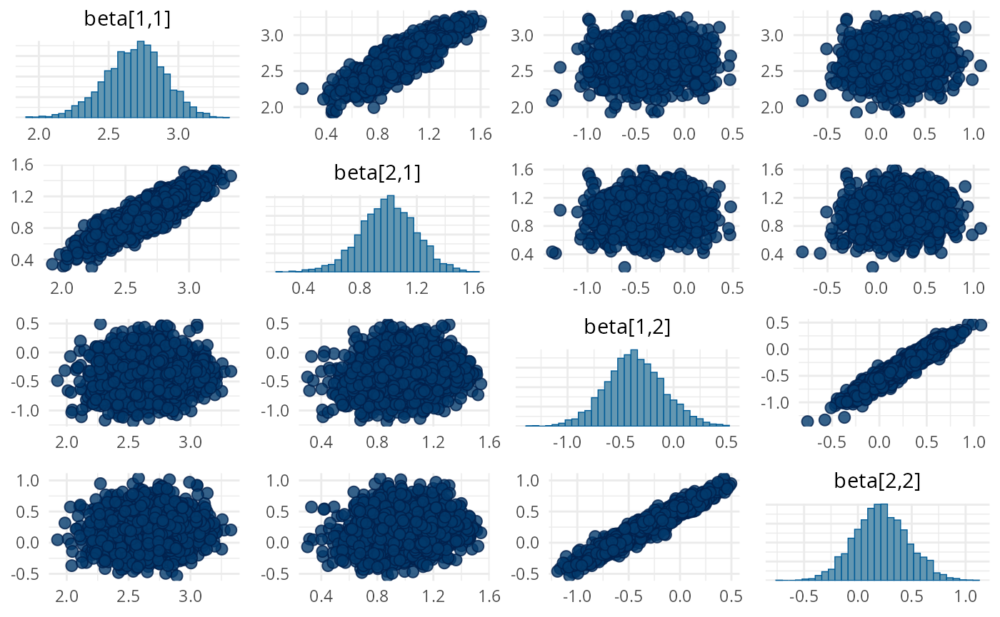
Turns out the correlations are in all fits, although sometimes they are relatively weak and the sampler is able to handle the posterior, it is potentially troubling. The main issue is that we plan to integrate this model with other components and problems that can be tolerated in a single component might interact with other components and make the model intractable.
We can even understand the reason for the positive correlation - it is because mean of our response beta distribution is exp(linpred[1,]) / ( exp(linpred[1,]) + exp(linpred[2,])), so increasing both linear predictors at the same time results in the same mean (but different variance). Since mean is usually more constrained than variance of the response, we get this ridge.
Parametrizing the beta distribution via mean
The simplest way to resolve the issue with the correlations is to explicitly parametrize the beta distribution by its mean (\(0 < \mu < 1\)). The more common parametrization than adds a precision parameter (\(\phi > 0\)), so we then have \(y \sim \mathrm{Beta}(\mu \phi, (1 - \mu) \phi)\)
This also makes much more sense for the bigger task - combining with the mixture component, as we really want to predict just a single probability. So we’ll rewrite our predictors to predict only the logit of the mean (as in logistic regression) and keep the precision as a constant between observations. We could definitely also decide whether to keep the full flexibility and allow predictors for precision, we just don’t do it here.
This is then our updated model:
data {
int<lower=0> N_obs;
vector<lower=0, upper=1>[N_obs] y;
int<lower=1> N_predictors;
matrix[N_predictors, N_obs] x;
}
parameters {
vector[N_predictors] beta;
real<lower=0> phi;
}
model {
vector[N_obs] mu = inv_logit(transpose(x) * beta);
target += beta_lpdf(y | mu * phi, (1 - mu) * phi);
target += normal_lpdf(beta | 0, 1);
}
model_beta_precision <- cmdstan_model("small_model_workflow/beta_precision.stan")
backend_beta_precision <- SBC_backend_cmdstan_sample(model_beta_precision) And we need to update the generator to match:
generator_func_beta_precision <- function(N_obs, N_predictors) {
repeat {
beta <- rnorm(N_predictors, 0, 1)
phi <- rlnorm(1, 3, 1)
x <- matrix(rnorm(N_predictors * N_obs, 0, 1), nrow = N_predictors, ncol = N_obs)
x[1, ] <- 1 # Intercept
y <- array(NA_real_, N_obs)
for(n in 1:N_obs) {
linpred <- 0
for(p in 1:N_predictors) {
linpred <- linpred + x[p, n] * beta[p]
}
mu <- plogis(linpred)
y[n] <- rbeta(1, mu * phi, (1 - mu) * phi)
}
if(all(y > 1e-7) && all(y < 1 - 1e-7)) {
break;
}
}
list(
parameters = list(
beta = beta,
phi = phi
),
generated = list(
N_obs = N_obs,
N_predictors = N_predictors,
y = y,
x = x
)
)
}
generator_beta_precision <-
SBC_generator_function(generator_func_beta_precision, N_obs = 50, N_predictors = 3)Starting with 10 datasets:
set.seed(46988234)
datasets_beta_precision_10 <- generate_datasets(generator_beta_precision, 10)
results_beta_precision_10 <- compute_results(datasets_beta_precision_10, backend_beta_precision,
cache_mode = "results",
cache_location = file.path(cache_dir, "beta_precision_10"))## Results loaded from cache file 'beta_precision_10'## - 10 (100%) fits had some steps rejected. Maximum number of rejections was 15.## Not all diagnostics are OK. You can learn more by inspecting $default_diagnostics, $backend_diagnostics and/or investigating $outputs/$messages/$warnings for detailed output from the backend.No big problems from the fit and the plots:
plot_rank_hist(results_beta_precision_10)
plot_ecdf_diff(results_beta_precision_10)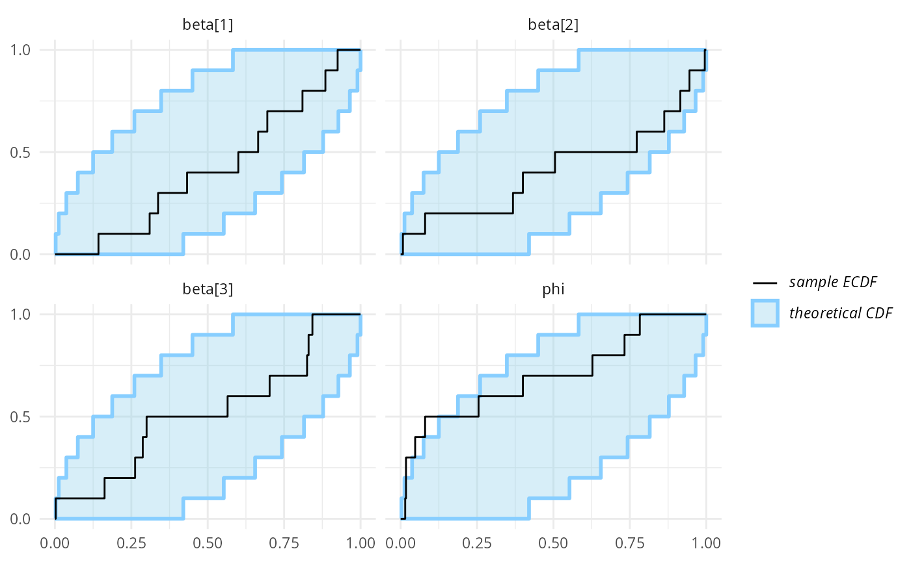
So we’ll run 90 more iterations and combine them with the previous results:
set.seed(2136468)
datasets_beta_precision_90 <- generate_datasets(generator_beta_precision, 90)
results_beta_precision_90 <- compute_results(
datasets_beta_precision_90, backend_beta_precision,
keep_fits = FALSE, cache_mode = "results",
cache_location = file.path(cache_dir, "beta_precision_90"))## Results loaded from cache file 'beta_precision_90'## - 90 (100%) fits had some steps rejected. Maximum number of rejections was 18.## Not all diagnostics are OK. You can learn more by inspecting $default_diagnostics, $backend_diagnostics and/or investigating $outputs/$messages/$warnings for detailed output from the backend.
results_beta_precision_100 <-
bind_results(
results_beta_precision_10,
results_beta_precision_90
)
datasets_beta_precision_100 <- bind_datasets(datasets_beta_precision_10, datasets_beta_precision_90)
plot_rank_hist(results_beta_precision_100)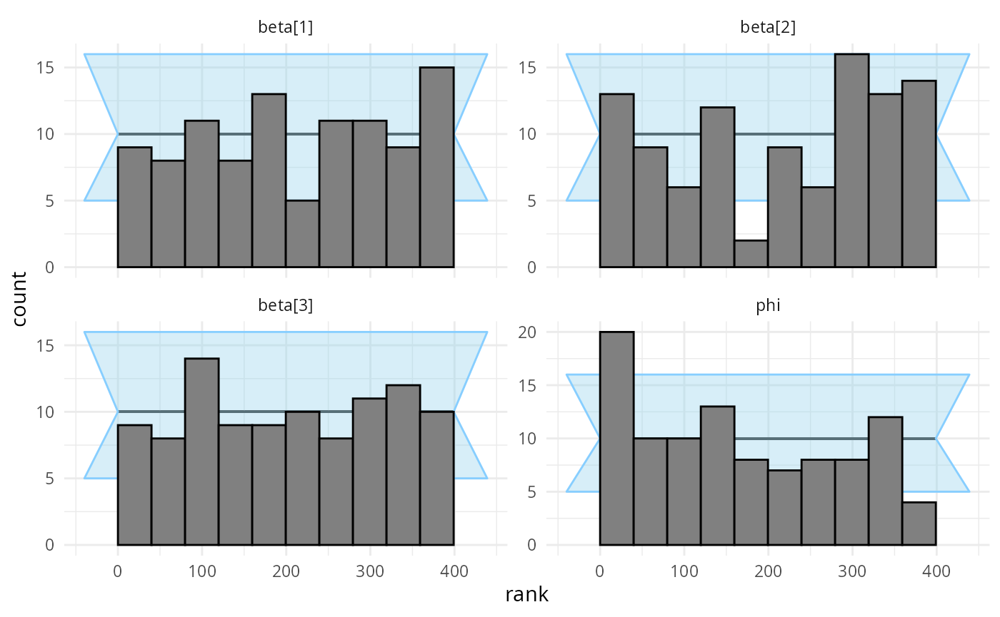
plot_ecdf_diff(results_beta_precision_100)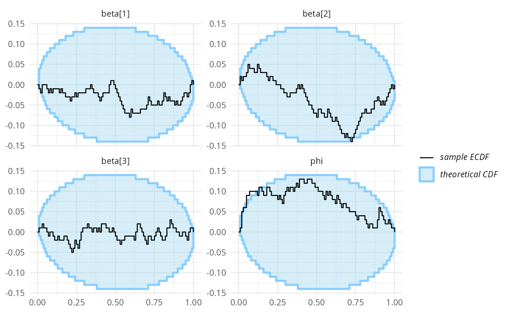 The plots don’t look terrible, but the beta[2] and especially the phi parameter show slight problems.
So we look back at our model code and note that we forgot to put any prior on phi! Mismatches in priors between the model and the simulator are unfortunately often not very well visible for SBC and can require a lot of simulations to discover (see the limits_of_SBC vignette for more detailed discussion)
Adding missing prior
So we add the missing prior to the model:
data {
int<lower=0> N_obs;
vector<lower=0, upper=1>[N_obs] y;
int<lower=1> N_predictors;
matrix[N_predictors, N_obs] x;
}
parameters {
vector[N_predictors] beta;
real<lower=0> phi;
}
model {
vector[N_obs] mu = inv_logit(transpose(x) * beta);
target += beta_lpdf(y | mu * phi, (1 - mu) * phi);
target += normal_lpdf(beta | 0, 1);
target += lognormal_lpdf(phi | 3, 1);
}
model_beta_precision_fixed_prior <-
cmdstan_model("small_model_workflow/beta_precision_fixed_prior.stan")
backend_beta_precision_fixed_prior <- SBC_backend_cmdstan_sample(model_beta_precision_fixed_prior) And recompute for all 100 datasets at once (as we don’t expect adding prior to introduce huge problems).
results_beta_precision_fixed_prior <-
compute_results(datasets_beta_precision_100, backend_beta_precision_fixed_prior,
keep_fits = FALSE, cache_mode = "results",
cache_location = file.path(cache_dir, "beta_precision_fixed_prior"))## Results loaded from cache file 'beta_precision_fixed_prior'## - 100 (100%) fits had some steps rejected. Maximum number of rejections was 20.## Not all diagnostics are OK. You can learn more by inspecting $default_diagnostics, $backend_diagnostics and/or investigating $outputs/$messages/$warnings for detailed output from the backend.
plot_rank_hist(results_beta_precision_fixed_prior)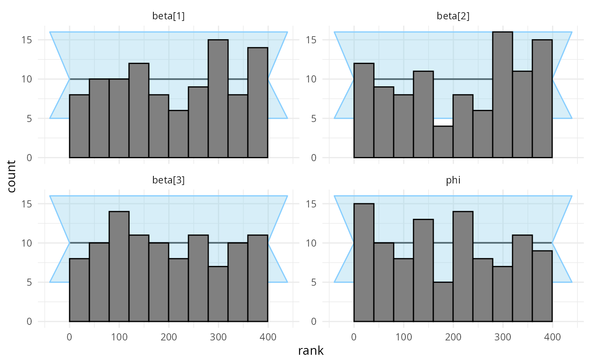
plot_ecdf_diff(results_beta_precision_fixed_prior)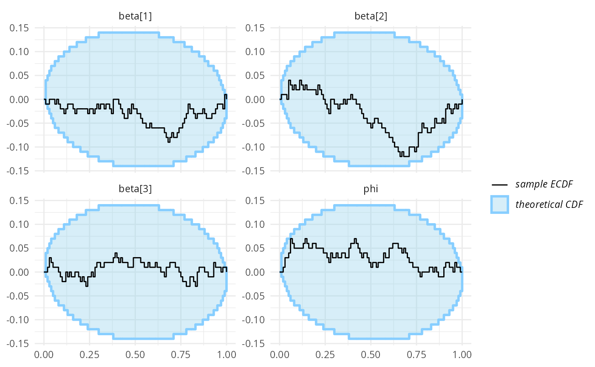
Diagnostic plots are looking good! So we add 100 more datasets:
set.seed(1233845)
datasets_beta_precision_100b <- generate_datasets(generator_beta_precision, 100)
results_beta_precision_fixed_prior_200 <-
bind_results(
results_beta_precision_fixed_prior,
compute_results(datasets_beta_precision_100b, backend_beta_precision_fixed_prior,
keep_fits = FALSE, cache_mode = "results",
cache_location = file.path(cache_dir, "beta_precision_fixed_prior_2")))## Results loaded from cache file 'beta_precision_fixed_prior_2'## - 100 (100%) fits had some steps rejected. Maximum number of rejections was 18.## Not all diagnostics are OK. You can learn more by inspecting $default_diagnostics, $backend_diagnostics and/or investigating $outputs/$messages/$warnings for detailed output from the backend.
plot_rank_hist(results_beta_precision_fixed_prior_200)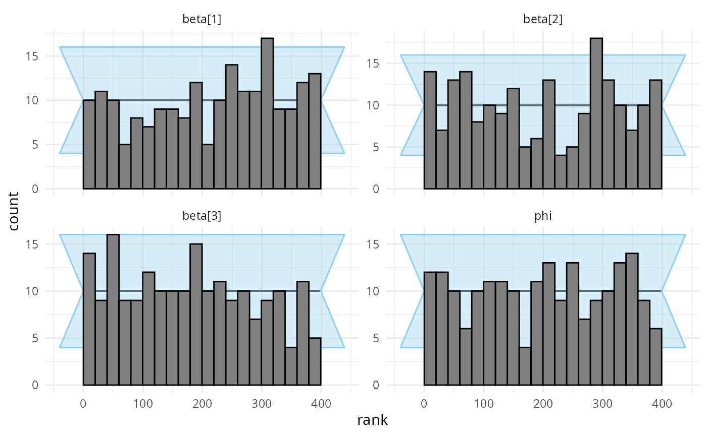
plot_ecdf_diff(results_beta_precision_fixed_prior_200)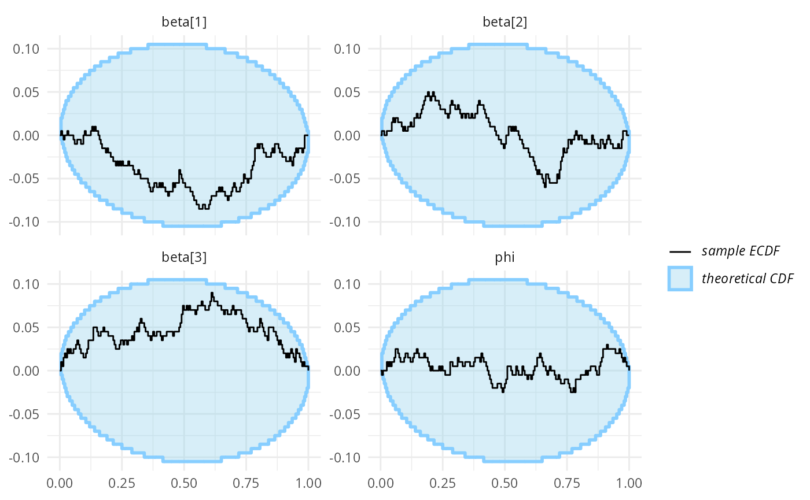
Yeah, still looking good. And we can see that the empirical coverage of our central intervals is in quite tight agreement with theory:
plot_coverage(results_beta_precision_fixed_prior_200)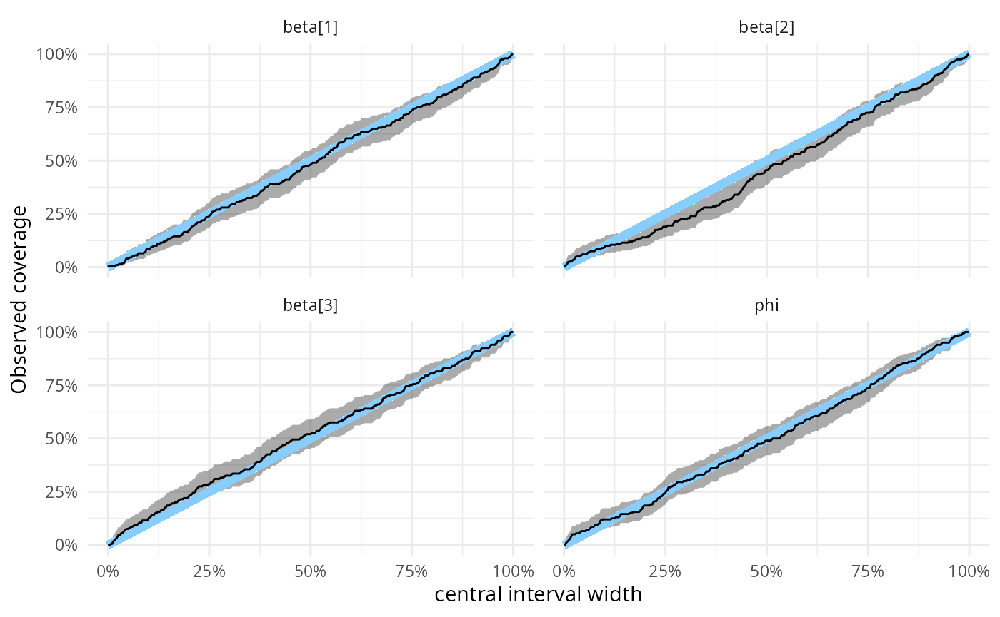 So for now we are also happy about the beta regression component.
Putting it together
We are finally ready to make a first attempt at the full model:
data {
int<lower=0> N_obs;
int y[N_obs];
int<lower=1> N_predictors;
matrix[N_predictors, N_obs] x;
}
parameters {
ordered[2] mu;
vector[N_predictors] beta;
}
model {
vector[N_obs] theta = inv_logit(transpose(x) * beta);
for(n in 1:N_obs) {
target += log_mix(theta[n],
poisson_log_lpmf(y[n] | mu[1]),
poisson_log_lpmf(y[n] | mu[2]));
}
target += normal_lpdf(mu | 3, 1);
target += normal_lpdf(beta | 0, 1);
}
model_combined <- cmdstan_model("small_model_workflow/combined_first.stan")
backend_combined <- SBC_backend_cmdstan_sample(model_combined)And this is our generator for the full model:
generator_func_combined <- function(N_obs, N_predictors) {
# If the priors for all components of an ordered vector are the same
# then just sorting the result of a generator is enough to create
# a valid sample from the ordered vector
mu <- sort(rnorm(2, 3, 1))
beta <- rnorm(N_predictors, 0, 1)
x <- matrix(rnorm(N_predictors * N_obs, 0, 1), nrow = N_predictors, ncol = N_obs)
x[1, ] <- 1 # Intercept
y <- array(NA_real_, N_obs)
for(n in 1:N_obs) {
linpred <- 0
for(p in 1:N_predictors) {
linpred <- linpred + x[p, n] * beta[p]
}
theta <- plogis(linpred)
if(runif(1) < theta) {
y[n] <- rpois(1, exp(mu[1]))
} else {
y[n] <- rpois(1, exp(mu[2]))
}
}
list(
parameters = list(
beta = beta,
mu = mu
),
generated = list(
N_obs = N_obs,
N_predictors = N_predictors,
y = y,
x = x
)
)
}
generator_combined <- SBC_generator_function(generator_func_combined, N_obs = 50, N_predictors = 3)We are confident (and the fits are fast anyway), so we start with 200 simulations:
set.seed(5749955)
dataset_combined <- generate_datasets(generator_combined, 200)
results_combined <- compute_results(dataset_combined, backend_combined,
keep_fits = FALSE, cache_mode = "results",
cache_location = file.path(cache_dir, "combined"))## Results loaded from cache file 'combined'## - 7 (4%) fits had at least one Rhat > 1.01. Largest Rhat was 1.05.## - 8 (4%) fits had tail ESS undefined or less than half of the maximum rank, potentially skewing the rank statistics. The lowest tail ESS was NA.
## If the fits look good otherwise, increasing `thin_ranks` (via recompute_statistcs) or number of posterior samples (by refitting) might help.## - 20 (10%) fits had divergent transitions. Maximum number of divergences was 66.## - 2 (1%) fits had some steps rejected. Maximum number of rejections was 2.## Not all diagnostics are OK. You can learn more by inspecting $default_diagnostics, $backend_diagnostics and/or investigating $outputs/$messages/$warnings for detailed output from the backend.We get some amount of divergent transitions, but the ranks look pretty good:
plot_rank_hist(results_combined)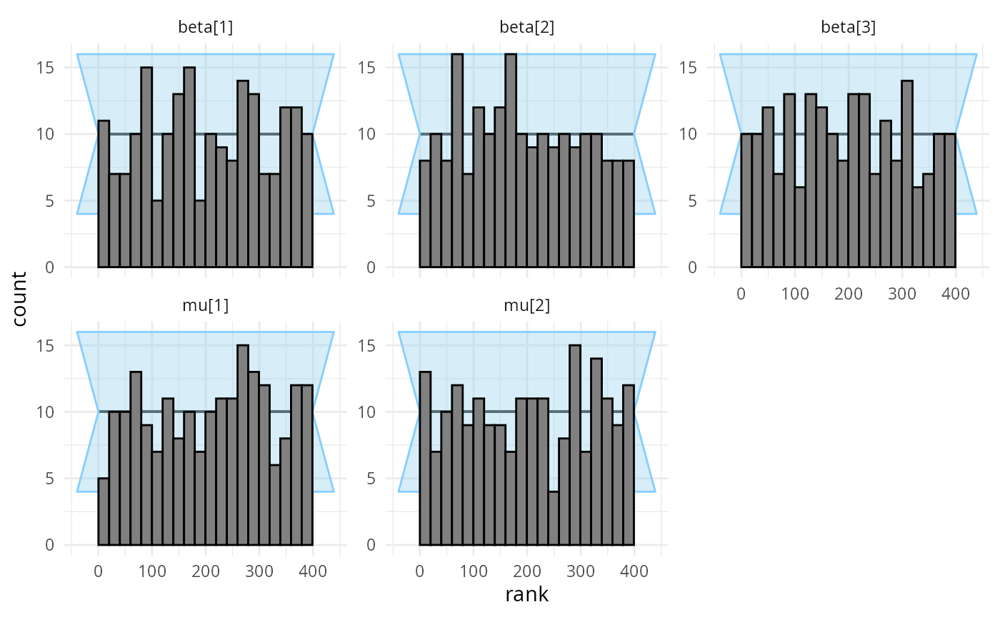
plot_ecdf_diff(results_combined)
Indeed it seems the model works pretty well.
Adding rejection sampling
As done previously, we could just exclude the fits that had divergences, but just to complete our tour of possibilities, we’ll show one more option to dealing with this type of problem.
The general idea is that although we might not want to/be able to express our prior belief about the model (here that the two mixture components are distinct) by priors on model parameters, we still may be able to express our prior belief about the data itself.
And it turns out that if we remove datasets that don’t meet a certain condition imposed on the observed data, the implied prior on parameters becomes an additive constant and we can use exactly the same model to fit only the non-rejected datasets. Note that this does not hold if the we rejected datasets based on their parameter values - for more details see the rejection_sampling vignette.
The main advantage is that if we can do this, we can avoid wasting computation on fitting datasets that would likely produce divergences anyway. The downside is that it means we no longer have a guarantee the model works for non-rejected datasets, so we need to check if the data we want to analyze would not be rejected by our criterion.
How to build such a criterion here? We’ll note that for Poisson-distributed variables the ratio of mean to variance (a.k.a the Fano factor) is always 1. So if the components are too similar, the data should resemble a Poisson distribution and have Fano factor of 1, while if the components are distinct the Fano factor will be larger.
Below is a plot of fano factors versus the number of divergences we’ve seen:
fanos <- vapply(dataset_combined$generated,
function(dataset) { var(dataset$y) / mean(dataset$y) },
FUN.VALUE = 0)
plot(fanos, results_combined$backend_diagnostics$n_divergent)All the divergence are for low fano factors - this is the histogram of Fano factor for diverging fits:
hist(fanos[results_combined$backend_diagnostics$n_divergent > 0]) So what we’ll do is that we’ll reject any dataset with Fano factor < 1.5. In practice a simple way to implement this is to wrap our generator code in a loop and break from the loop only when the generated dataset meets our criteria (i.e. is not rejected). This is our code:
So what we’ll do is that we’ll reject any dataset with Fano factor < 1.5. In practice a simple way to implement this is to wrap our generator code in a loop and break from the loop only when the generated dataset meets our criteria (i.e. is not rejected). This is our code:
generator_func_combined_reject <- function(N_obs, N_predictors) {
if(N_obs < 5) {
stop("Too low N_obs for this simulator")
}
repeat {
# If the priors for all components of an ordered vector are the same
# then just sorting the result of a generator is enough to create
# a valid sample from the ordered vector
mu <- sort(rnorm(2, 3, 1))
beta <- rnorm(N_predictors, 0, 1)
x <- matrix(rnorm(N_predictors * N_obs, 0, 1), nrow = N_predictors, ncol = N_obs)
x[1, ] <- 1 # Intercept
y <- array(NA_real_, N_obs)
for(n in 1:N_obs) {
linpred <- 0
for(p in 1:N_predictors) {
linpred <- linpred + x[p, n] * beta[p]
}
theta <- plogis(linpred)
if(runif(1) < theta) {
y[n] <- rpois(1, exp(mu[1]))
} else {
y[n] <- rpois(1, exp(mu[2]))
}
}
if(var(y) / mean(y) > 1.5) {
break;
}
}
list(
parameters = list(
beta = beta,
mu = mu
),
generated = list(
N_obs = N_obs,
N_predictors = N_predictors,
y = y,
x = x
)
)
}
generator_combined_reject <-
SBC_generator_function(generator_func_combined_reject, N_obs = 50, N_predictors = 3)We’ll once again fit our model to 200 datasets:
set.seed(44685226)
dataset_combined_reject <- generate_datasets(generator_combined_reject, 200)
results_combined_reject <- compute_results(dataset_combined_reject, backend_combined,
keep_fits = FALSE, cache_mode = "results",
cache_location = file.path(cache_dir, "combined_reject"))## Results loaded from cache file 'combined_reject'## - 1 (0%) fits had some steps rejected. Maximum number of rejections was 2.## Not all diagnostics are OK. You can learn more by inspecting $default_diagnostics, $backend_diagnostics and/or investigating $outputs/$messages/$warnings for detailed output from the backend.No more divergences! And the ranks look nice.
plot_rank_hist(results_combined_reject)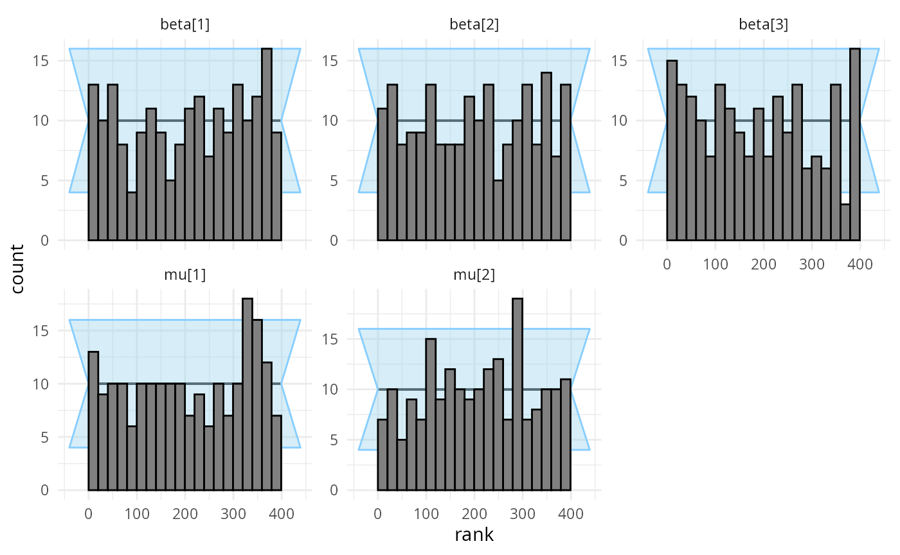
plot_ecdf_diff(results_combined_reject)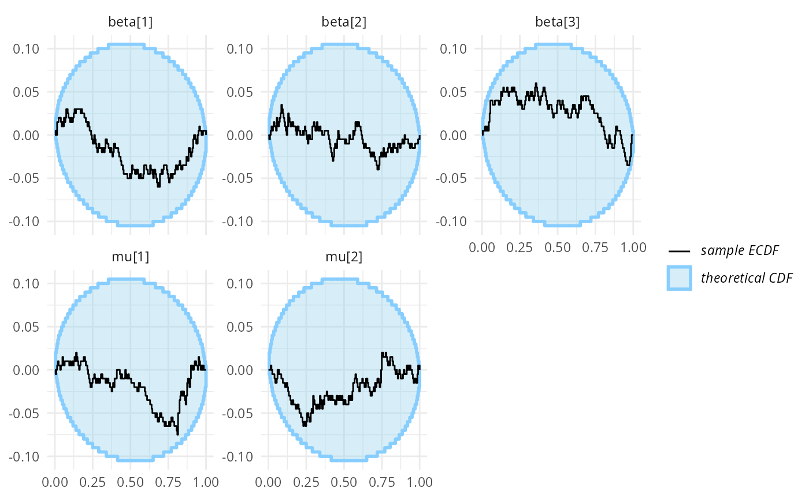
And our coverage is pretty tight:
plot_coverage(results_combined_reject) Here is the uncertainty shown numerically for two parameters and some widths of central posterior intervals:
Here is the uncertainty shown numerically for two parameters and some widths of central posterior intervals:
stats_subset <- results_combined_reject$stats[
results_combined_reject$stats$parameter %in% c("beta[1]", "mu[1]"),]
empirical_coverage(stats_subset, c(0.25,0.5,0.9,0.95))## # A tibble: 8 x 6
## parameter width width_represented ci_low estimate ci_high
## <chr> <dbl> <dbl> <dbl> <dbl> <dbl>
## 1 beta[1] 0.25 0.249 0.168 0.22 0.283
## 2 beta[1] 0.5 0.499 0.402 0.47 0.539
## 3 beta[1] 0.9 0.900 0.828 0.88 0.918
## 4 beta[1] 0.95 0.950 0.886 0.93 0.958
## 5 mu[1] 0.25 0.249 0.182 0.235 0.299
## 6 mu[1] 0.5 0.499 0.387 0.455 0.524
## 7 mu[1] 0.9 0.900 0.851 0.9 0.934
## 8 mu[1] 0.95 0.950 0.910 0.95 0.972Maybe we think the remaining uncertainty is too big, so we’ll run 300 more simulations, just to be sure:
set.seed(1395367854)
dataset_combined_reject_more <- generate_datasets(generator_combined_reject, 300)
results_combined_reject_more <- bind_results(
results_combined_reject,
compute_results(dataset_combined_reject_more, backend_combined,
keep_fits = FALSE, cache_mode = "results",
cache_location = file.path(cache_dir, "combined_reject_more"))
)## Results loaded from cache file 'combined_reject_more'## - 2 (1%) fits had at least one Rhat > 1.01. Largest Rhat was 1.093.## - 2 (1%) fits had tail ESS undefined or less than half of the maximum rank, potentially skewing the rank statistics. The lowest tail ESS was NA.
## If the fits look good otherwise, increasing `thin_ranks` (via recompute_statistcs) or number of posterior samples (by refitting) might help.## - 2 (1%) fits had divergent transitions. Maximum number of divergences was 119.## - 3 (1%) fits had some steps rejected. Maximum number of rejections was 2.## Not all diagnostics are OK. You can learn more by inspecting $default_diagnostics, $backend_diagnostics and/or investigating $outputs/$messages/$warnings for detailed output from the backend.We get some very small number of problematic fits, which we can ignore in this volume (but probably more aggresive rejection sampling would remove those as well).
Our plots and coverage are now pretty decent:
plot_rank_hist(results_combined_reject_more)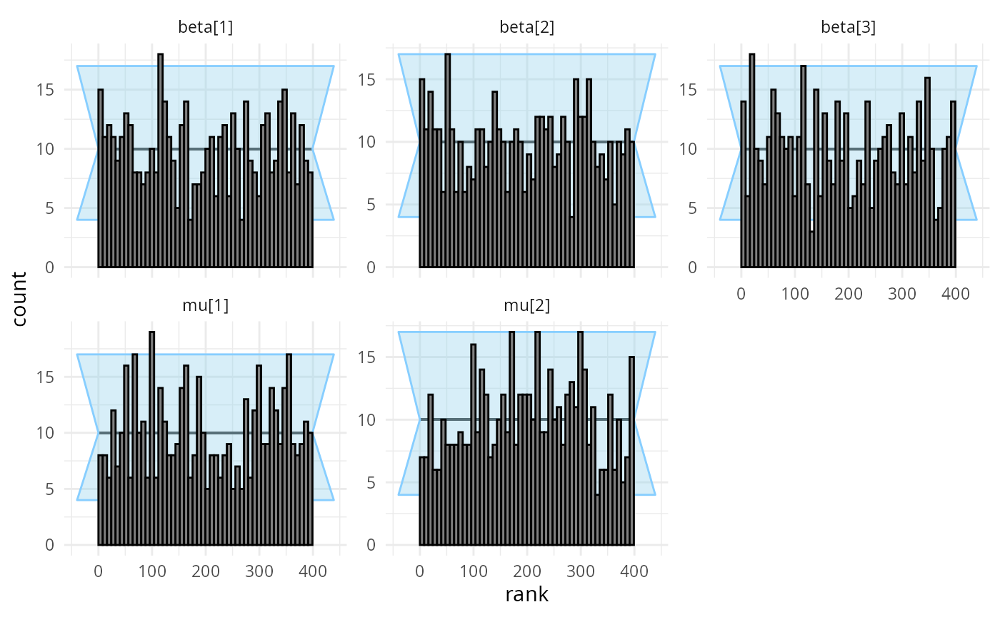
plot_ecdf_diff(results_combined_reject_more)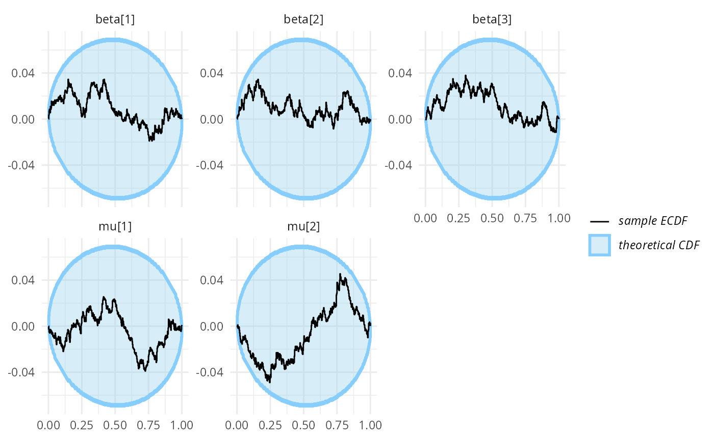
plot_coverage(results_combined_reject_more)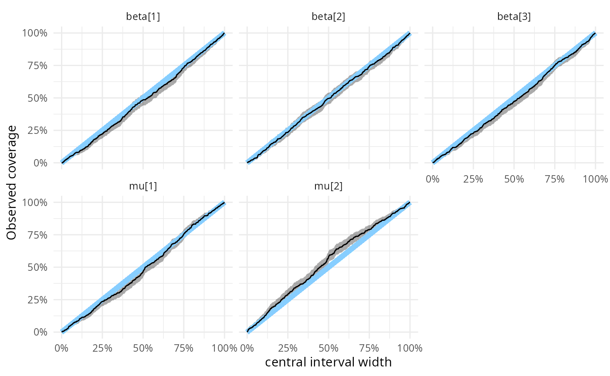
stats_subset <- results_combined_reject_more$stats[
results_combined_reject_more$stats$parameter %in% c("beta[1]", "mu[2]"),]
empirical_coverage(stats_subset, c(0.25,0.5,0.9,0.95))## # A tibble: 8 x 6
## parameter width width_represented ci_low estimate ci_high
## <chr> <dbl> <dbl> <dbl> <dbl> <dbl>
## 1 beta[1] 0.25 0.249 0.188 0.222 0.261
## 2 beta[1] 0.5 0.499 0.431 0.474 0.518
## 3 beta[1] 0.9 0.900 0.866 0.896 0.920
## 4 beta[1] 0.95 0.950 0.911 0.936 0.954
## 5 mu[2] 0.25 0.249 0.242 0.28 0.321
## 6 mu[2] 0.5 0.499 0.536 0.58 0.622
## 7 mu[2] 0.9 0.900 0.886 0.914 0.935
## 8 mu[2] 0.95 0.950 0.930 0.952 0.967This actually shows a limitation of the coverage results - for mu[2] the approximate CI for coverage excludes exact calibration for a bunch of intervals, but above we see that the more trustworthy plot_ecdf_diff is not showing a problem (although there is some tendency towards slight underdispersion).
Still, this might warrant further investigation if small discrepancies in mu are considered important, if we are interested only in the beta coefficients, we can stay assured that their calibration is pretty good. We give you our word that we ran additional simulations and the discrepance disappears.
Finally, we can also use this simulation exercise to understand what would we be likely to learn from an experiment matching the simulations (50 observations, 3 predictors) and plot the true values against estimated mean + 90% posterior credible interval:
plot_sim_estimated(results_combined_reject_more, alpha = 0.2)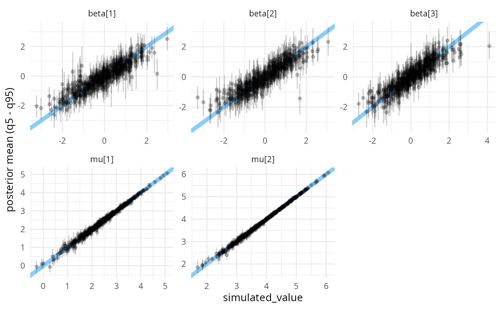 We see that we get very precise information about mu and a decent picture about all beta elements, but the reamining uncertainty is large. We could for example compute the probability that the posterior 90% interval for beta[1] excludes zero, i.e. that we learn something about the sign of beta[1] and it is close to 50%:
stats_beta1 <-
results_combined_reject_more$stats[
results_combined_reject_more$stats$parameter == "beta[1]",]
mean(sign(stats_beta1$q5) == sign(stats_beta1$q95))## [1] 0.498Depending on your aims, this might be a reason to plan for a larger sample size!
And that’s it for this vignette, thanks for staying until the end and hope the workflow ideas will be useful for you!